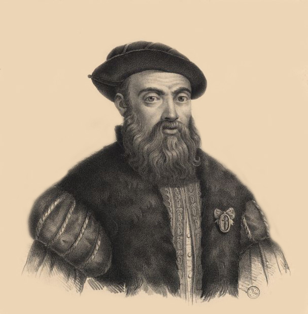
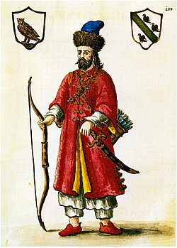
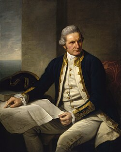
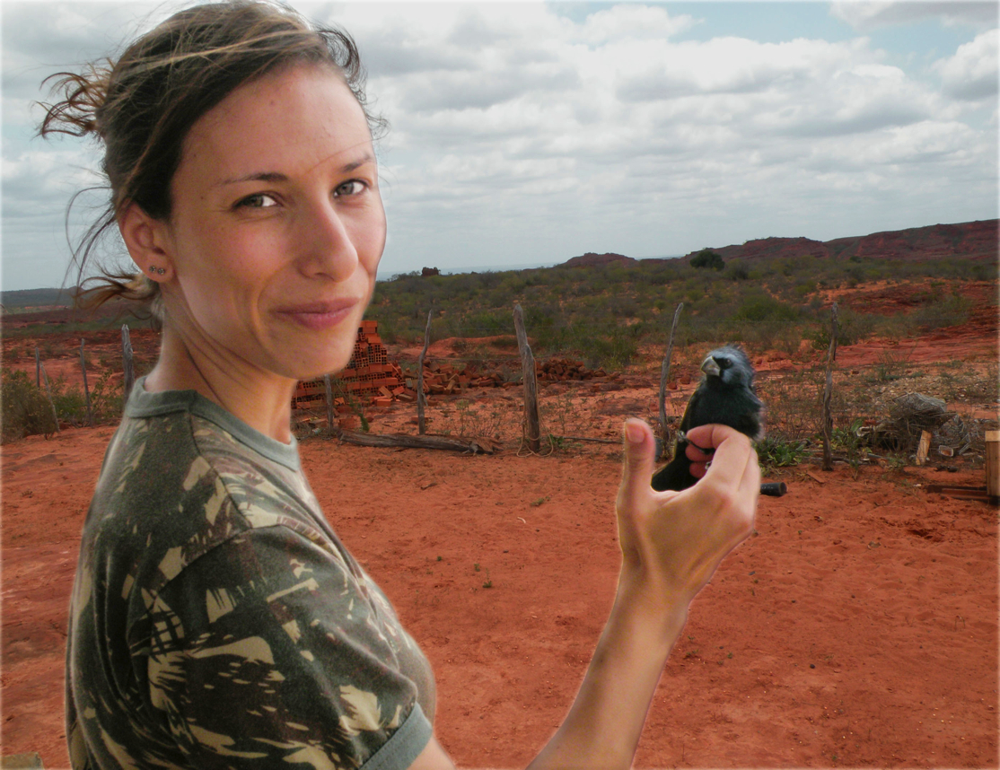
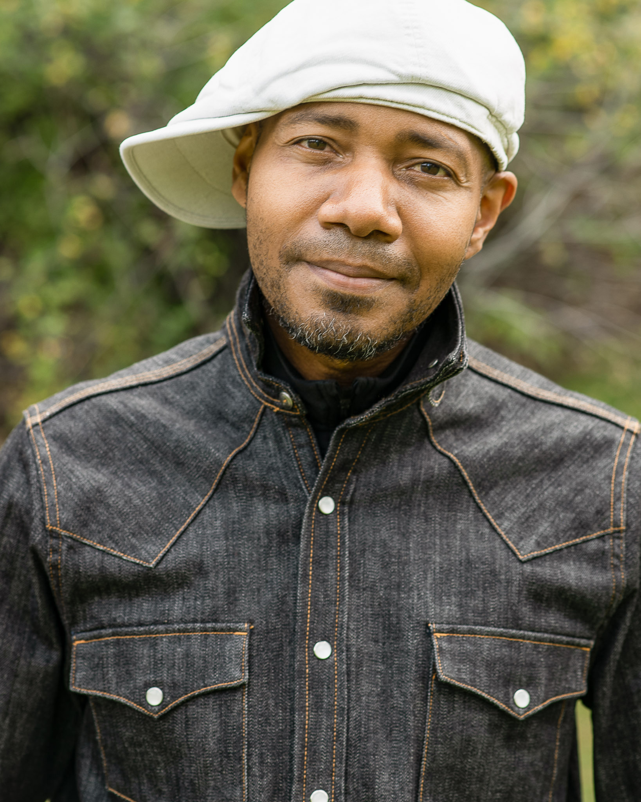
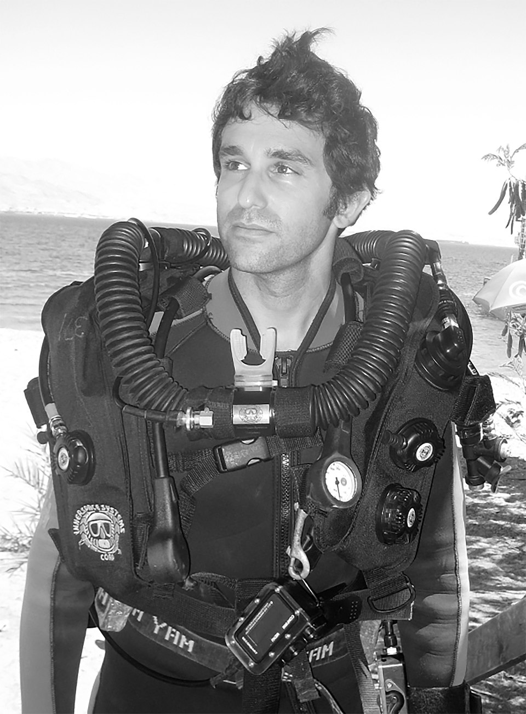

Najwięksi podróżnicy w historii
W 1492 roku, działając w imieniu Hiszpanii, wyruszył przez Ocean Atlantycki i dotarł do Ameryki, choć był przekonany, że znalazł drogę do Indii. Odwiedził tereny dzisiejszych Bahamów, Kuby i Haiti.
Podczas wypraw spotkał rdzennych mieszkańców mówiących w różnych językach (np. arawak), a także zetknął się z zupełnie nową dla Europejczyków przyrodą — papugami, egzotycznymi roślinami i nieznanymi wcześniej zwierzętami.
Link po więcej informacjiPortugalski żeglarz w służbie Hiszpanii, który rozpoczął pierwszą podróż dookoła świata w 1519 roku. Przepłynął przez cieśninę nazwaną dziś jego imieniem i dotarł na Filipiny.
Podczas wyprawy jego załoga zetknęła się z wieloma kulturami i językami Azji oraz Ameryki Południowej. Spotykali nieznane wcześniej gatunki zwierząt morskich, a także egzotyczne ptaki i rośliny tropikalne.

Link po więcej informacjiWenecki podróżnik, który w XIII wieku dotarł aż do Chin, przemierzając Jedwabny Szlak. Odwiedził tereny dzisiejszego Iranu, Afganistanu, Mongolii i Chin.
Opisał kulturę, języki i zwyczaje Dalekiego Wschodu, które były zupełnie nieznane w Europie. Spotykał egzotyczne zwierzęta, takie jak wielbłądy, tygrysy czy słonie, oraz opisywał bogactwo azjatyckiej przyrody.

Link po więcej informacjiBrytyjski odkrywca XVIII wieku, który badał Pacyfik, docierając do Australii, Nowej Zelandii i Hawajów. Tworzył bardzo dokładne mapy nowych terenów.
Podczas swoich podróży poznawał lokalne kultury i języki rdzennych mieszkańców. Opisywał także unikalną faunę i florę — kangury, egzotyczne ptaki oraz rafy koralowe.

Link po więcej informacjiMożliwi Najwięksi Przyszli podróżnicy
Biolog Juliana Machado Ferreira walczy z nielegalnym handlem zwierzętami w Brazylii. Wykorzystuje do tego naukę, prosi o pomoc polityków, prowadzi szkolenia i daje wykłady – wszystko po to, by ograniczyć popyt, wzmocnić prawodawstwo, dać odpowiednie uprawnienia policji i nawiązać współpracę międzynarodową. Każdego dnia kłusownicy pozbawiają przyrodę Brazylii 38 milionów zwierząt, które trafiają do rąk osób zajmujących się nielegalnym handlem, wartym 2 miliardy dolarów rocznie. Machado Ferreira zwalcza nielegalny handel na wielu frontach, po to założyła organizację FREELAND Brasil. Trzymanie w domu ptaków śpiewających i papug to popularny zwyczaj w Brazylii, dlatego FREELAND Brasil stara się wytłumaczyć ludziom, jaką szkodę wyrządza ten zwyczaj przyrodzie. Podczas akcji SOS Fauna Juliana pomaga policji identyfikować i zliczać znalezione ptaki oraz oceniać ich stan. Machado Ferreira jest doktorem genetyki, opracowała markery molekularne, dzięki którym można zidentyfikować obszar, z którego pochodzą znalezione przez policję ptaki i wypuścić je na wolność w tym samym miejscu.
„Potężny biznes nielegalnego handlu zwierzętami coraz bardziej zagraża przyrodzie Brazylii. Musimy temu zapobiec, zanim będzie za późno.” – Juliana Machado Ferreira

Wynalazca Jack Andraka z Crownsville w stanie Maryland nie jest typowym nastolatkiem. Dwa lata temu, mając 15 lat, wynalazł nową metodę wykrywania raka trzustki, płuc i jajników. Wystarczy do tego prosta sonda, bibuła i omomierz, które pozwalają wykryć wzrost stężenia pewnego białka. Tak można zdiagnozować nowotwór już na wczesnym etapie, a więc wtedy, gdy szanse wyzdrowienia są większe. Koszt badania wynosi 3 centy, a potrzeba na nie zaledwie 5 minut. Andraka, opierając się na wstępnych wynikach badań, obliczył, że jego urządzenie nie myli się w 90% przypadków, jest 168 razy szybsze, 26 tysięcy razy tańsze i 400 razy bardziej czułe niż urządzenia obecnie stosowane w wykrywaniu raka trzustki, płuc i jajników. Młody wynalazca jest już posiadaczem międzynarodowego patentu i zamierza w ciągu kilku lat wprowadzić urządzenie na rynek. Jego zdaniem tę samą metodę można zastosować w przypadku każdej innej choroby. W 2012 roku Andraka zdobył główną nagrodę na Międzynarodowych Targach Nauki i Inżynierii Intel ISEF. Jest adwokatem swobodnego dostępu do federalnych źródeł finansowania badań naukowych.
„Innowacyjność bierze się z chęci podjęcia ryzyka, a podjęte ryzyko może doprowadzić do jakiegoś odkrycia. Mam nadzieję, że moje odkrycie pomoże diagnozować raka i ocali życie wielu osób.” – Jack Andraka.
Shabana Basij-Rasikh urodziła się i wychowała w Kabulu, stolicy Afganistanu. Uczęszczała do szkoły średniej w USA, korzystając z dobrodziejstwa programu wymiany uczniowskiej. Następnie zdobyła dyplom Middlebury College w stanie Vermont. Podczas studiów należała do grupy założycieli SOLA – organizacji non-profit, która daje młodym Afgańczykom dostęp do edukacji za granicą i do pracy w kraju. Shabana jest także współzałożycielką HELA, organizacji non-profit, która ma na celu poprawę bytu afgańskich kobiet poprzez edukację. Po ukończeniu studiów wróciła do Kabulu i przekształciła SOLA w pierwszą w kraju szkołę z internatem dla dziewcząt. Jest także prezesem szkoły oferującej kursy przygotowawcze na studia i pomagającej absolwentom dostać się na uniwersytety na całym świecie, a następnie zdobyć dobrą pracę w Afganistanie. Ci absolwenci to często pierwsze kobiety na danym stanowisku. SOLA pomogła dziewczętom z wielu zakątków kraju zdobyć stypendia na łączną kwotę 7,7 miliona dolarów.
„Najlepszym antidotum na rządy Talibów jest wychowanie najlepiej wyedukowanego pokolenia liderów w historii Afganistanu. Dzisiejsze dziewczęta – a jutrzejsze kobiety – zrealizują ten cel.” – Shabana Basij-Rasikh.
Obrońcy środowiska, Asher Jay, nie brakuje kreatywności. Jest projektantką, artystką, pisarką i aktywistką, która w wymyślny sposób promuje prawa zwierząt, zrównoważony wzrost i zagadnienia humanitarne. Jej sztuka, między innymi rzeźby, instalacje, filmy i specjalne kampanie promocyjne, kieruje uwagę na mnóstwo rzeczy – od wycieków ropy, masowego zabijania delfinów, aż po kurczące się populacje lwów. Większość jej znanych prac skupia się na nielegalnym handlu kością słoniową, jest autorką animowanego billboardu na Times Square oraz ambitnego projektu wymierzonego w chińską klasę średnią, która ma coraz większy apetyt na kość słoniową. Brała udział w organizowanej przez Fabergé imprezie Big Egg Hunt w Nowym Jorku, pieniądze ze sprzedaży jej jaja poszły na walkę z kłusownictwem w Amboseli w Kenii. Jej następne projekty poruszą zagadnienie utraty bioróżnorodności w Antropocenie oraz zagrożeń, jakie czekają na największe zwierzęta, najpopularniejszy przedmiot handlu. Jej zdaniem „Siła sztuki polega na przenikaniu barier, ignorowaniu różnic, łączeniu ludzi podskórną więzią, zmuszeniu do działania”.
„Mam nadzieję, że zainspiruję każdego człowieka do właściwego wykorzystania swojej energii, tak żeby każdy czyn miał znaczenie.” – Asher Jay
Chińska naukowiec zajmująca się nanotechnologiami, wykładowca Uniwersytetu Stanforda, profesor Xiaolin Zheng, kieruje zespołem badawczym, który dokonał przełomowego odkrycia, mogącego upowszechnić wykorzystanie energii słonecznej. To ogniwo słoneczne w postaci giętkich naklejanych arkuszy, dziesięciokrotnie cieńszych niż folia kuchenna. Cienkie, zginające się ogniwa słoneczne produkują tyle samo energii, co sztywne. A skoro są lżejsze, będą łatwiejsze i tańsze w instalacji. Ich giętkość pozwala przyczepić je do każdej powierzchni – telefonu komórkowego, świetlika w domu, ściany, zakrzywionej kolumny. Zheng sądzi, że takie naklejane ogniwa słoneczne pewnego dnia mogą pokrywać ściany budynków i chodniki, zapewniając energię używaną do oświetlania, zasilania domowych systemów bezpieczeństwa, samochodów czy samolotów. Jego zdaniem te ogniwa znajdą zastosowanie nie tylko w przemyśle i kiedyś będzie można zwyczajnie kupić je w kiosku, tak jak dziś kupuje się baterie.
„Bardzo cienkie i giętkie ogniwa słoneczne wydłużają listę zastosowań. Mam nadzieję, że nasz wynalazek poważnie zwiększy liczbę tanich, praktycznych zastosowań energii słonecznej.” – Xiaolin Zheng
Multimedialne pokazy, nagrania, instalacje i dzieła pisane kompozytora, pisarza i muzyka Paula D. Millera cechuje połączenie wielu gatunków, tematyka związana ze zmianami klimatu, zrównoważonym wzrostem, kulturą globalna, rolą technologii w społeczeństwie oraz innymi problemami ekologicznymi i społecznymi. Jego multimedialna kompozycja, książka i instalacja „The Book of Ice”, wykorzystując obraz i dźwięk, w bezpośredni sposób pokazuje ginący ekosystem Antarktydy. Z kolei dzieło „Nauru Elegies”, zawierające orkiestrę smyczkową, wideo, animację i przekaz na żywo z Internetu, skupia się na problemach wyeksploatowanej ponad miarę przyrody południowopacyficznej wyspy Nauru. Paul jest także założycielem Fundacji Vanuatu Pacifica, ekologicznego centrum sztuki na wyspie Vanuatu. Pierwszy raz międzynarodowy rozgłos zyskał jako hip-hopowy DJ Spooky, obecnie jest rozchwytywanym wykładowcą i gościem prestiżowych imprez, instytucji kulturalnych i uniwersytetów na każdym kontynencie. Jego darmową, open-source’ową aplikację na iPada, DJ Mixer, ściągnięto ponad 20 milionów razy. Umożliwia ona miksowanie, skreczowanie i dodawanie efektów do ścieżek z własnej biblioteki. Miller był pierwszym artystą-rezydentem nowojorskiego Metropolitan Museum of Art.
„Muzyka i sztuka pomagają wykrzesać myśl, przezwyciężyć bezwład. Pomagają ludziom angażować się w sprawy zmieniające w tempie geometrycznym nasz napędzany informacjami świat.” – Paul D. Miller aka DJ Spooky

Biolog morski, eksplorator oceanów, profesor David Gruber, szuka w podmorskim świecie zwierząt obdarzonych darem bioluminescencji. Jego odkrycia pozwalają lepiej poznać sekretny „język” barw i wzorów, który pozwala wielu zwierzętom morskim komunikować się ze sobą i ostrzegać się przed niebezpieczeństwem. David Gruber i jego współpracownicy odkryli i wyodrębnili z organizmów morskich fluorescencyjne cząsteczki, szukają powiązań między świecącymi organizmami morskimi a możliwością wizualizacji procesów zachodzących w komórkach ludzkiego ciała. Pracującej na Uniwersytecie Miejskim Nowego Jorku i w Amerykańskim Muzeum Historii Naturalnej grupie udało się rozszyfrować genom wielu fluorescencyjnych białek, które mają posłużyć jako narzędzie badań medycznych i wizualizacji procesów biologicznych. Gdy naukowcy przebywają na lądzie, projektują pojazdy podwodne i rozwiązania mające zrewolucjonizować badania oceanów. Gruber projektuje też bardzo czułe na światło kamery, którymi filmuje delikatne stworzenia morski z duża wyższą ostrością, a wykorzystując batyskafy, podwodne roboty i aparaty do nurkowania głębinowego, zdobywa coraz więcej wiedzy o życiu w morskich głębinach.
„Rafa koralowa to cały oddzielny świat. Skomplikowane konstrukcje, tętniące życiem niczym ukryte pod falami miasto, czekające by je odkryć.” – David Gruber
